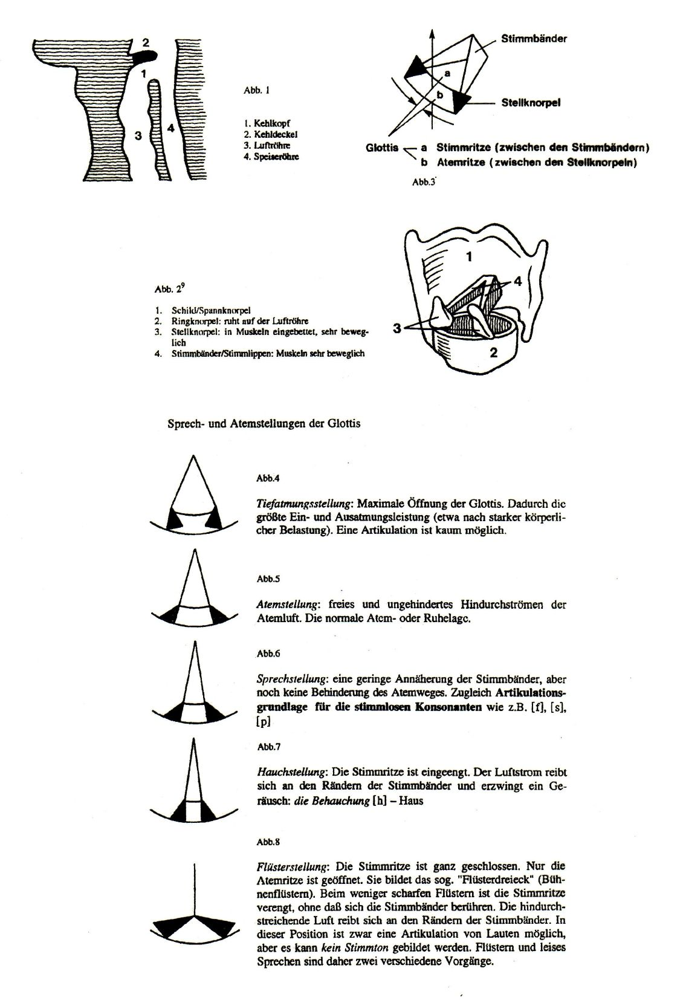
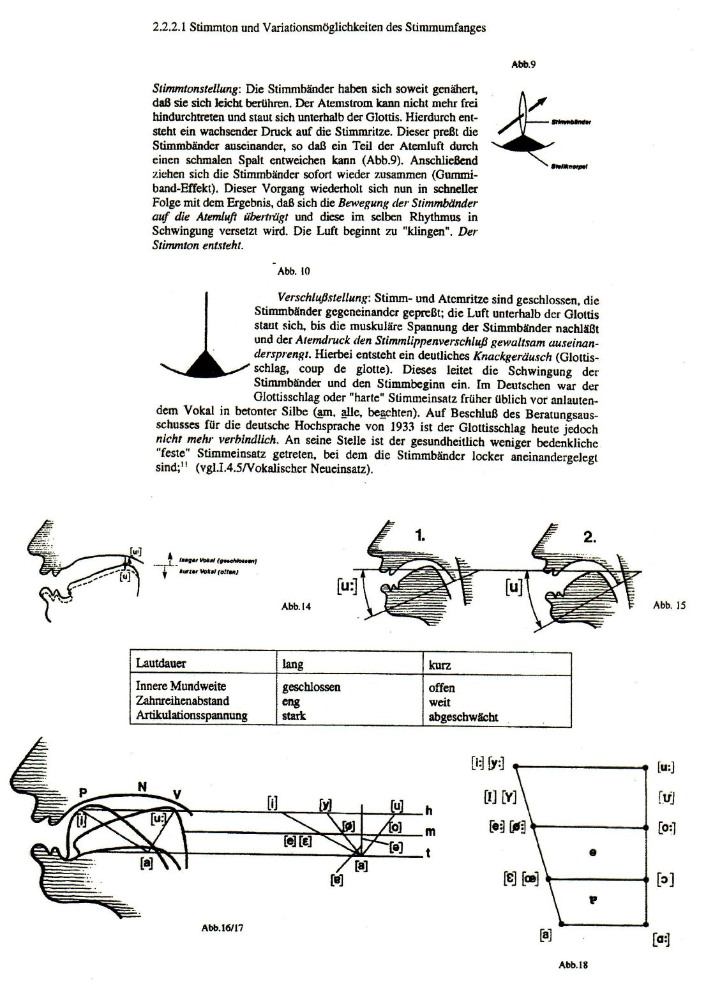
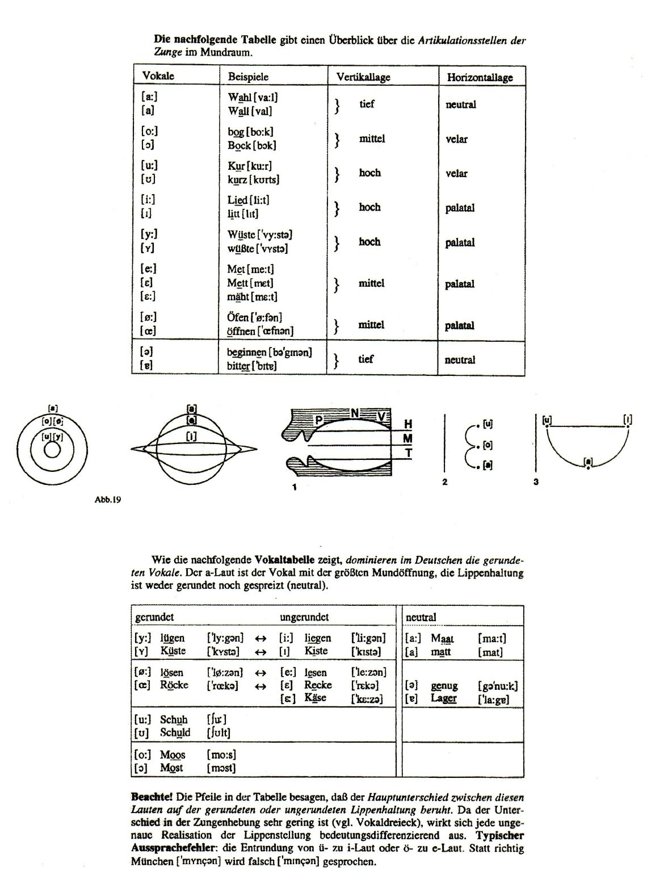
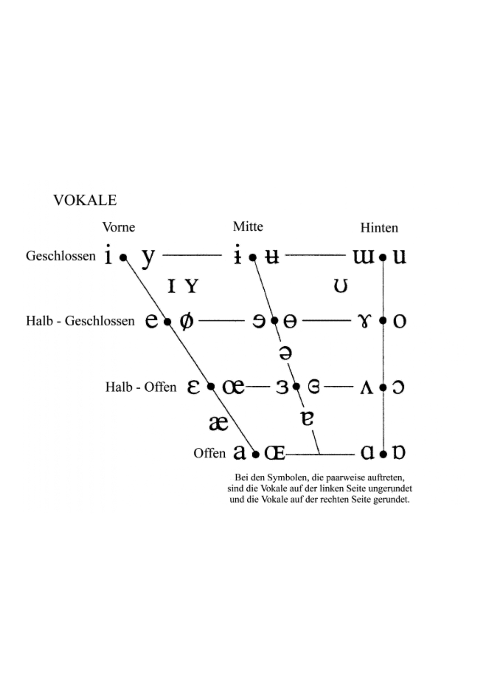
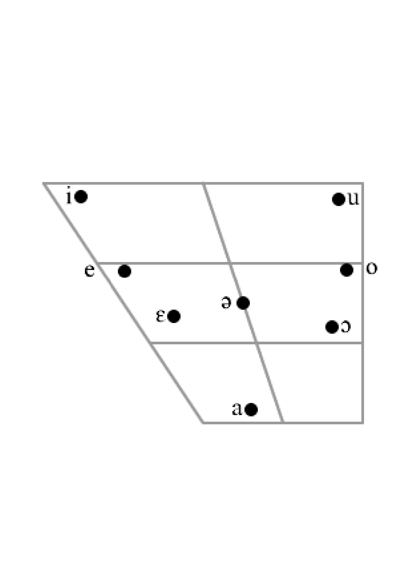
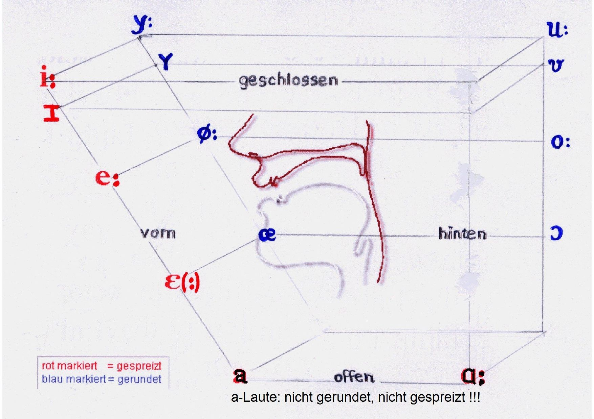
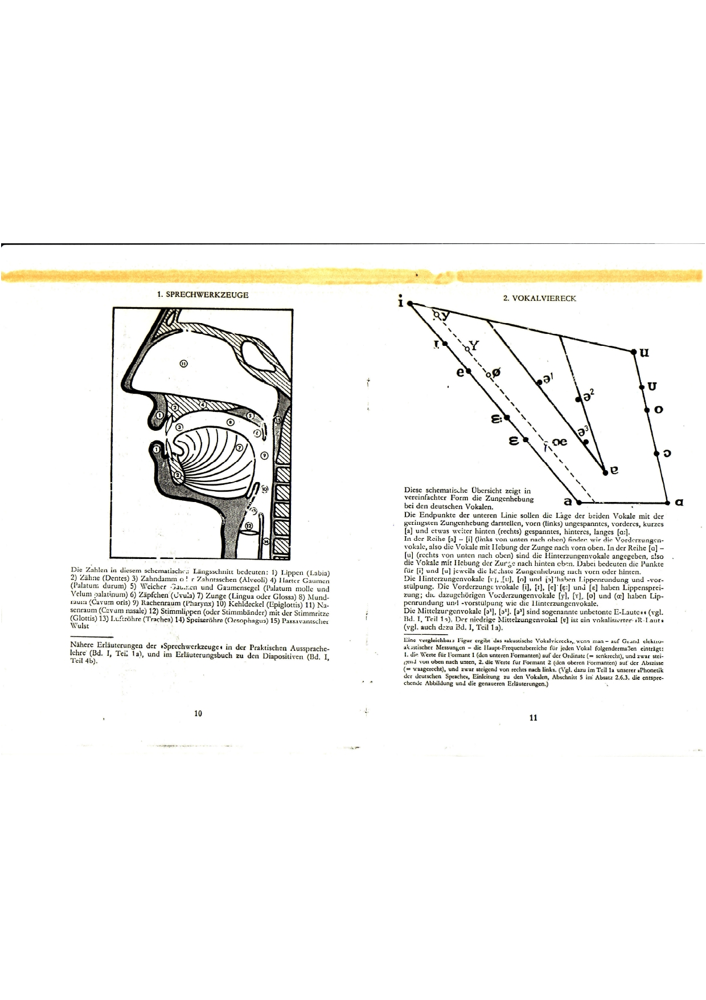
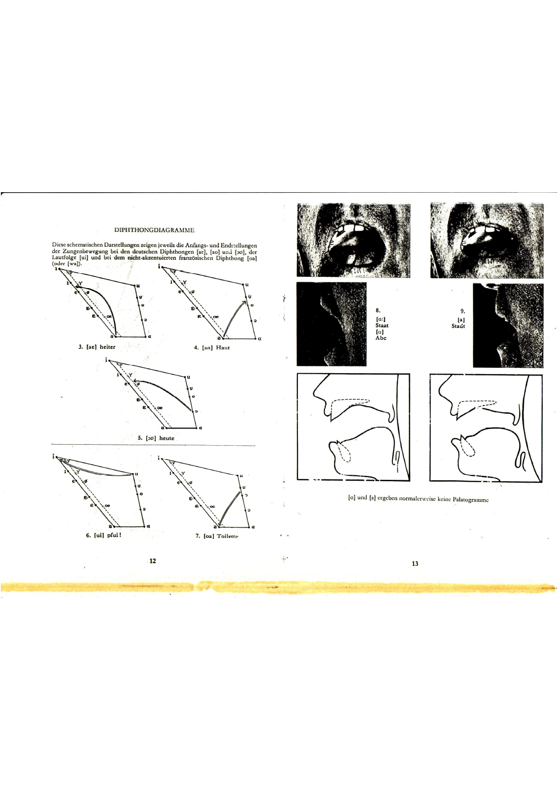
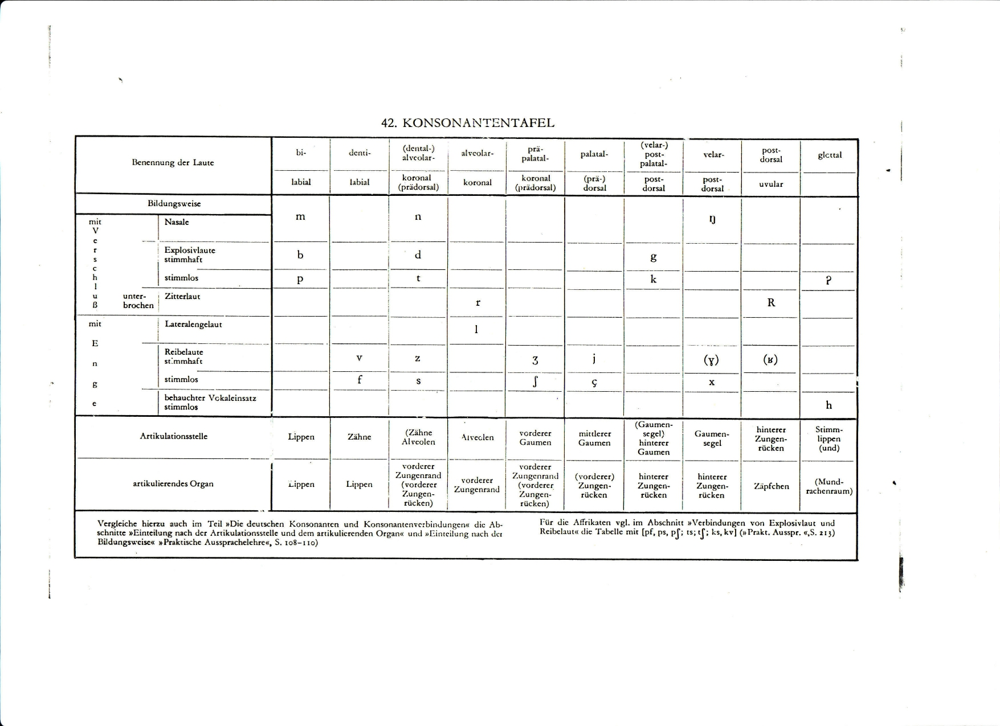

3 Aufgabenbereich der Phonetik
Die Phonetik ist eine Naturwissenschaft auf der Grundlage von Anatomie, Physiologie, Physik (Akustik) und Mathematik.
Ihre Aufgabe ist nach (Gross 1990 : 35) die materielle Analyse sprachlicher Äußerungen bzw. Laute als eine der Grundlagen
der theoretischen Linguistik und Dialektologie und
für die Lösung praktischer Probleme in der Patholinguistik, Sprachdidaktik und Computerlinguistik.
Aus dem jeweiligen Ort im Kommunikationsprozeß (Sprecher - Text - Hörer) ergeben sich laut (Gross 1990 : 36) drei Teilgebiete der Phonetik:
Die artikulatorische Phonetik beschreibt die Produktion der Laute, und zwar nach Artikulationsart und Artikulationsort.
Die akustische Phonetik beschreibt die Laute nach ihren physikalischen Eigenschaften (z.B. Dauer, Frequenz, Intensität) und erstellt mit Hilfe spezieller Meßgeräte verschiedenartige Diagramme z.B. Sonagramme.
Die auditive Phonetik untersucht die Rezeption und Analyse sprachlicher Zeichen durch Ohr, Nervenbahnen und Gehirn. Neben rein physikalischen Gegebenheiten ist in diesem Teilgebiet immer ein gewisses Maß an nicht direkt meßbaren (semantischen, psychologischen) Prozessen vorhanden (vgl. (vgl. Neppert und Pétursson 1992 : 8). Die auditive Phonetik ist das am wenigsten entwickelte Teilgebiet der Phonetik. Jedes Teilgebiet verfügt über eigene Grundeinheiten (vgl. Neppert und Pétursson 1992 : 8).
Im Rahmen des Phonetikunterrichts für Studenten der Germanistik, insbesondere Studenten des Deutschen als Fremdsprache, steht der Teilbereich der artikulatorischen Phonetik meist im Vordergrund, d.h. die Bildungsweise und der Bildungsort der deutschen Laute.
Durch die Segmentierung von Äußerungen erhält man ein Lautinventar, d.h. eine Liste aller Laute einer Sprache. Je genauer man die Untersuchung betreibt, desto länger wird die Liste; jeder Laut hat nämlich beliebig viele Varianten - in Abhängigkeit von verschiedenen lautlichen Umgebungen und verschiedenen Sprechern.
Das Lautinventar gilt als Grundlage für den nächsten Schritt, die Ermittlung von Phonemen (Lautmustern) und des Phoneminventars einer Sprache. Als Beispiel folgt ein Lautinventar der deutschen Sprache aus (Gross 1990 : 36-37), das allerdings nicht alle Lautrealisierungen im Deutschen auflistet.
Eine etwas umfangreichere Liste von Lauten der deutschen Sprache finden sich z.B. in der Dudengrammatik (Grebe und Gipper 1973 : 23-24). Zum slowenischen Laut- und Phoneminventar vgl. (Toporišič 1992 : 39ff.).
Beantworten Sie einige Fragen zum ersten Kapitel in schriftlicher Form! (Wiederholung dieser Fragen in mündlicher Form am Anfang des nächsten Treffens)
- Welche vier Teildisziplinen der Phonologie können wir unterscheiden?
- Beschreiben Sie in jeweils einem Satz, wie sich die einzelne Teildisziplin mit der Lautseite der Sprache beschäftigt!
- Was unterscheidet Phone von Phonemen?
- Welche Größe hat das Inventar deutscher Vokalphoneme im Vergleich zum Inventar slowenischer Vokalphoneme? Welches könnte deshalb schwerer zu erlernen sein?
Lesen Sie das Märchen Der Bauer und der Teufel laut vor und nehmen Sie sich dabei auf (in möglichst guter Klangqualität und ohne Störgeräusche)! Verwenden Sie für die Sprachaufnahme Ihr Handy oder ein Programm auf Ihrem Computer (z.B. Praat oder Audacity)! Die Audiodatei soll Ihnen zur Messung von Vokaldauer- und frequenzwerten mit Hilfe von Praat dienen.
3.1 Sprechwerkzeuge [#sec-sprechwerkzeuge]
Die Organe, die wir beim Sprechen verwenden (z.B. Lippen, Zunge, Rachen, Luftröhre, Lungen, Zwerchfell), sind genau genommen nicht speziell fürs Sprechen entstanden. Die primäre Aufgabe der Lungen, des Zwerchfells und der Luftröhre ist die Aufnahme von Luft, um den Körper mit dem notwendigen Sauerstoff zu versorgen. Selbst die Stimmlippen in unserem Kehlkopf sind nicht speziell für die Sprechtätigkeit entstanden, eher für viel einfachere Kommunikation (Warnung, Drohung, Abschreckung, Balzen, …). Auch viele andere Tiere (z.B. Schimpansen, Hunde, Kühe, Delfine usw.) haben Stimmlippen (Stimmbänder), sind jedoch nicht in der Lage, so wie Menschen diverse Lautmuster zu komplexer Sprache zu verwenden. Wenn also in der Phonetik von Sprechwerkzeugen die Rede ist, geht es also um Körperteile und Organe, die sich (evolutionär betrachtet) primär für lebensnotwendige Aufgaben entwickelt haben und sekundär (möglicherweise als evolutionärer Vorteil) aber auch für komplexe Kommunikationstätigkeiten genutzt werden. Sprache (Lautsprache) ermöglicht effiziente Übermittlung von Wissen und wirkungsvolle Zusammenarbeit von Menschen.
Um die Sprechwerkzeuge besser kennen zu lernen, benötigen wir ein wenig Wissen aus der Anatomie des Menschen.
Die erste Abbildung zeigt den Rachen- und Kehlkopfbereich im Sagitallschnitt: den Kehlkopf, den Kehldeckel, die Luftröhre und die Speiseröhre.
Die zweite und dritte Abbildung zeigen die Glottis, in der die Stimmlippen (Stimmbänder) sitzen. Die Stimmlippen ermöglichen die Erzeugung eines Stimmklangs. Diesen Vorgang nennt man Phonation.
Die nächsten Abbildungen zeigen die verschiedenen Glottiseinstellungen und die daraus resultierenden Sprachlaute.

Glottiseinstellungen: Die Stimmtoneinstellung, notwendig zur Phonation, und die Verschlussstellung.
Die folgenden Abbildungen zeigen Abbildungen für die Vokale im Deutschen.

Weitere Abbildungen, mit denen die Bildung deutscher Vokale illustriert wird.

Das Vokaltrapez (Vokalviereck) ist eines der wichtigsten Abbildungsmittel.

Vereinfachte Form des Vokalvierecks.

Das Vokalviereck in 3-dimensionaler Version (mit zusätzlicher Informationen über die Lippenform).

Abbildungen aus Wanglers Phonetik-Atlas: Sprechwerkzeuge und Vokaltrapez.

Diphthonge (vokalische Zwielaute) im Deutschen und andere Abbildungen, typisch für die Beschreibung der Vokalbildung (Wangler).

Eine Tabelle, in der die Bildung deutscher Konsonanten systematisch abgebildet ist, und zwar nach drei Gesichtspunkten: Artikulationsorgan, Artikulationsstelle, Artikulationsmodus und Stimmtonaktivierung.

Beschreiben Sie die Bildung des Vokals … bzw. des Konsonanten … ! Verwenden Sie Bilder und eventuell vorhandene Animationen! Führen Sie typische Wortbeispiele an! Zeigen Sie mit den Wortbeispielen auch, welche Schreibweisen für den betreffenden Sprachlaut möglich sind!
In der Tabelle können Sie erfahren, welche deutschen Sprachlaute Ihnen zugewiesen wurden.